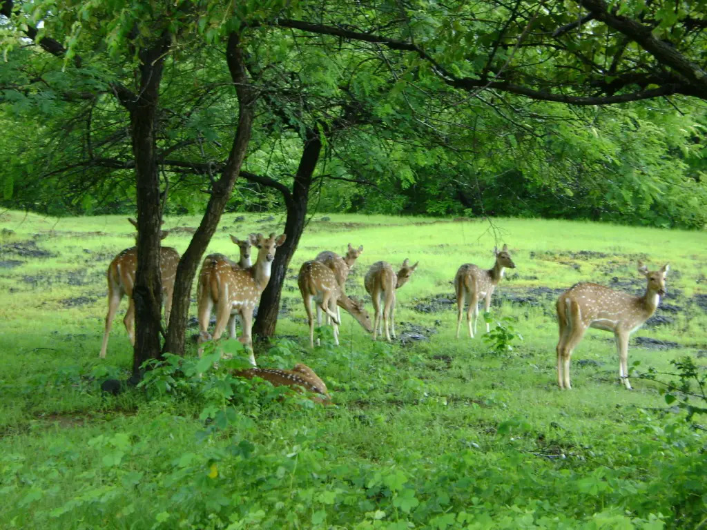
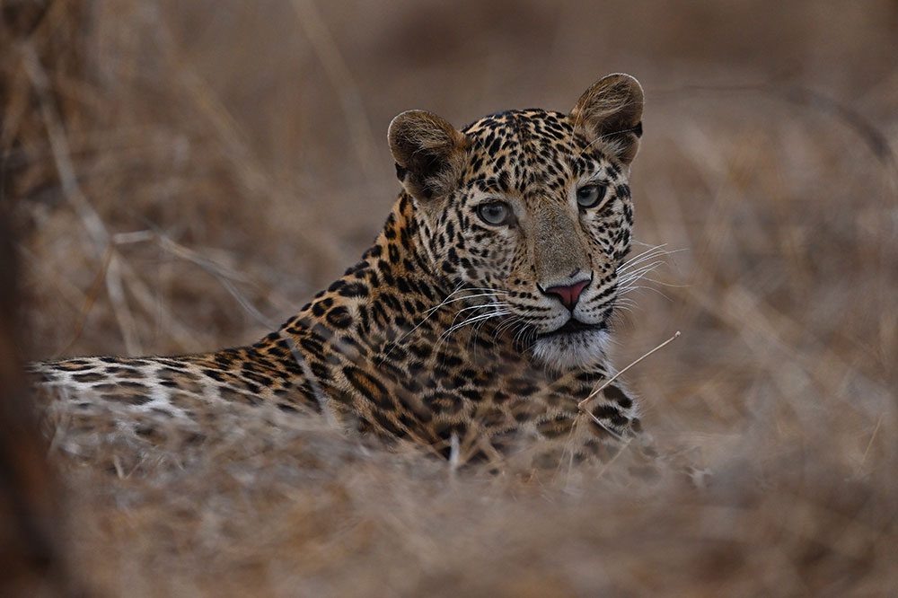
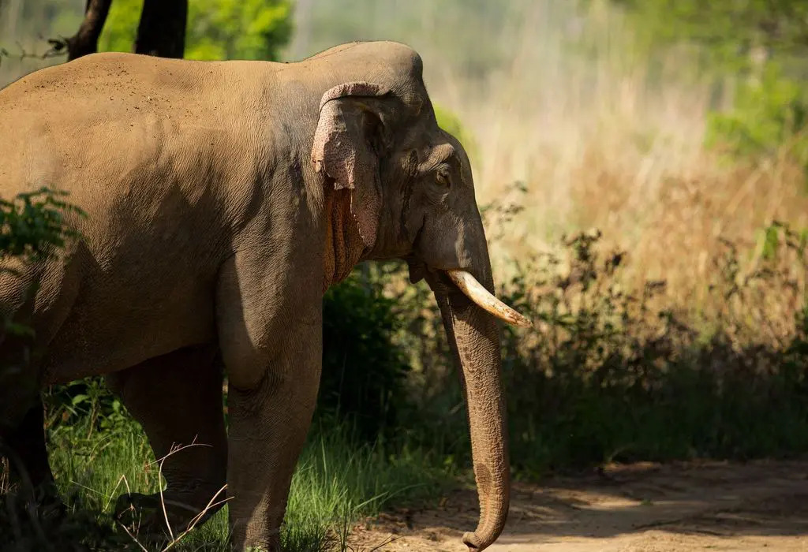
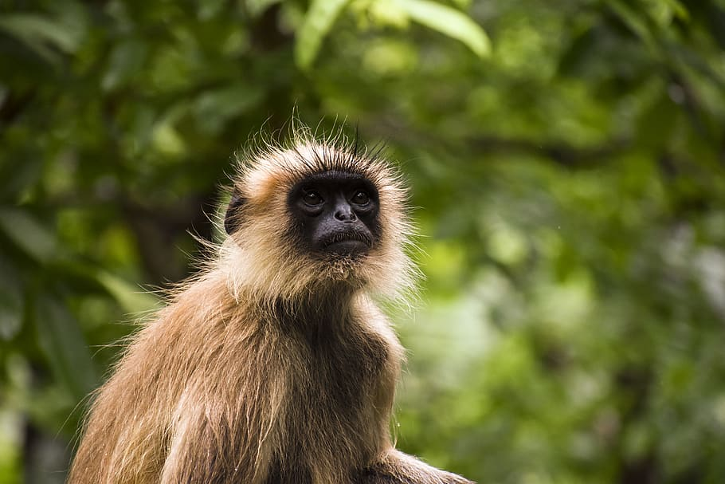
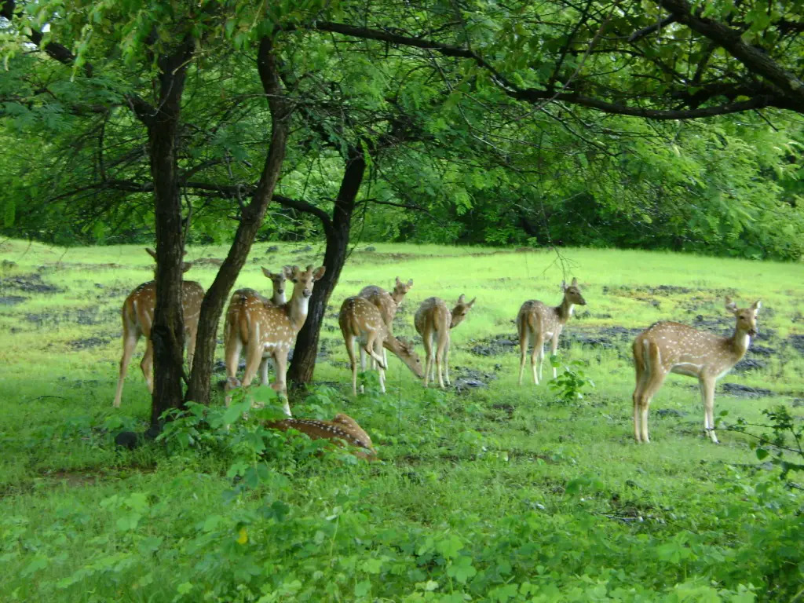
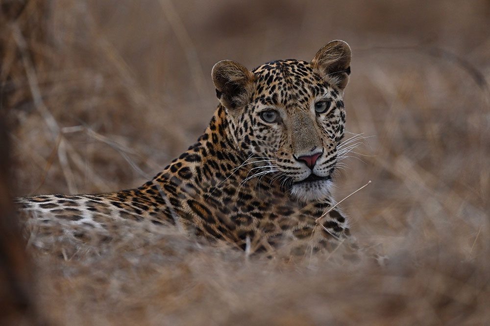
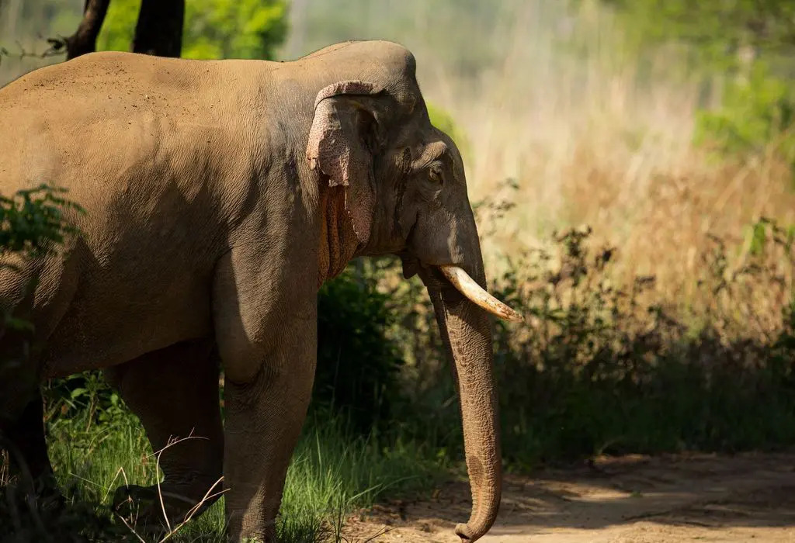
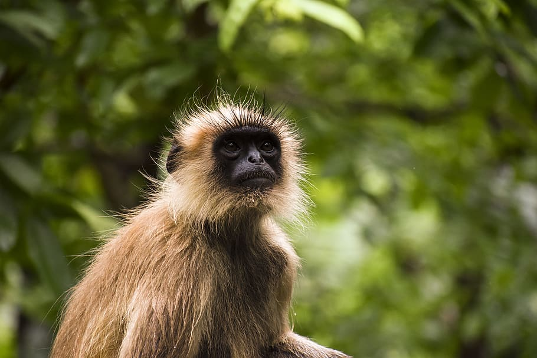

General Information
Pench National Park is located in the heart of India- Madhya Pradesh and covers a total area of 758 sq.km. It is located on the southern part of Madhya Pradesh, to be specific, in the districts of Seoni and Chhindwara, which also shares a boundary with Maharashtra. An additional area of 257 sq.km of this park lies in Maharashtra but is also accessible from Madhya Pradesh.
History
Not always a national park, Pench was declared as a sanctuary in 1965 but in 1975, it rose to the status of a National Park. And since it is home to a huge amount of tigers, it was established as a tiger reserve in 1992 and now is working under Project Tiger.
Geography
Pench National Park comprises 758 km2 (293 sq mi), of which 299 km2 (115 sq mi) form the park's core area and Mowgli Pench Sanctuary. The remaining 464 km2 (179 sq mi) form the buffer zone. Elevation ranges from 425 to 620 m (1,394 to 2,034 ft). The protected area is covered with small hills and teak mixed forest in the southern reaches of the Satpura Range. The temperature varies from 4 °C (39 °F) in December to 42 °C (108 °F) in May. Average rainfall is 1,300 mm (51 in).
Fauna
Zoo-geographically, it is a member of the oriental region. The area has always been rich in wildlife.
The high habitat heterogeneity favours good population of Chital and Sambhar. The area is
especially famous for large herds of Chital, Sambar, Nilgai, Gaur (Indian Bison) and wild boar. The
key predator is the tiger followed by leopard, wild dogs and wolf. Out of the 58 species of
mammals, the important ones include sloth bear, chousingha, barking deer, jackal, fox, palm civet,
small Indian civet, jungle cat, hyena and porcupine. There are over 325 species of resident and
migratory birds including the Malabar Pied Hornbill, Indian Pitta, Osprey, Grey Headed Fishing
Eagle, White Eyed Buzzard etc. Other fauna includes 50 species of fishes, 13 species of
amphibians, 33 species of reptiles, 105 species of Butterflies, moths and large numbers of other
insects. Vultures are also seen in many parts of core area.
FloraBiodiversity values: Floristically, part of Indo-Malaya realm
Forest Types:
South Indian tropical Moist Deciduous Forest 3B/C
Southern Tropical Dry Deciduous Forest 5A/C
Southern Dry Mixed Deciduous Forest 5A/C3
Boswellia Forest 5E2 –
Biogeographic classification (Rodgers and Panwar 1988):Zone- 6E Deccan Peninsula Central
Highland. The undulating topography supports a mosaic of vegetation ranging from moist sheltered
valley to open, dry deciduous forest. Over 1200 species of plants have been recorded from the area.
This includes several rare and endangered plants as well as plants of ethno-botanical importance.
- 5/DS1-Dry deciduous scrub forest
- 5/DS1-Dry savannah forests (Locally known as "vidis"). It is the largest dry deciduous forest in western India.
Tiger Status
The reserve has a high tiger density and is an important tiger source area of the Central India
Landscape. As per the 2010 country level assessment using the refined methodology, the tiger
estimate for the Pench landscape is 65 (ranging from 53 to 78) with an increasing trend. The forest
divisions surrounding the reserve like South Seoni, East Chhindwara and South Chhindwara
divisions also support resident tigers. These areas have been incorporated in the buffer of the tiger
reserve
 






